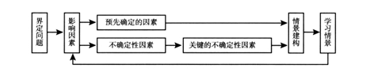
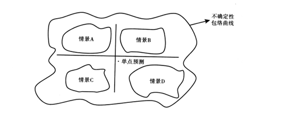
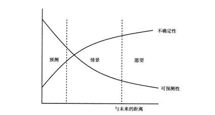

收录于合集

★
摘要： 国际关系中的一个根本困境是不确定性的存在，国际关系学者长期以来尝试用各种预测分析法和简约化的理论来应对，但并不尽如人意。本文试图借鉴情景分析这一在社会科学其他学科广泛应用的研究方法，阐述其在国际关系领域的适用性。情景分析是指对未来有多种可能的发展状况的描述，
**
**
关键词： 情景分 析 预测 不确定性 简约化理论 蒙特佛利会议
★
情景分析 ( scenario analysis) 是一种对某种现象或趋势未来发展的可能状态进行评估的分析方法，自 20世纪六七十年代以来，这种研究方法被广泛运用于社会科学的诸多领域。情景分析方法的最早提出者、美国学者赫尔曼·卡恩 ( Herman Kahn) 指出， 由于国际事务的复杂多变，有些问题是人们意想不到的，如果再以简单的抽象假设模型去思考和应对，会存在很大的风险性和危险性。卡恩利用情景分析法对热核战争的多种可能性进行了详细分析，认为未来不是简单的有无核战争之分，而是会呈现多种可能性，如对战争的余悸、禁止核武器、显示核武力和有限的核攻击等。卡恩的研究对美国的核战略和军事战略产生了深远影响。
20 世纪 70 年代，资深战略规划专家皮埃尔·瓦克 ( PierreWack) 将情景分析引入荷兰皇家壳牌石油公司( RoyalDutchShell) 。壳牌石油公司运用情景分析，描绘了石油输出国组织 ( OPEC) 未来的可能动向，并 “预演” 了面对各种危机的因应措施。1973 年10 月，第四次中东战争爆发。石油输出国组织为了打击对手以色列及其他支持以色列的国家，宣布石油禁运， 暂停出口，由此引发了全球石油危机。在世界所有主要的石油公司中，由于壳牌石油公司预先已做好准备，因而只有它成功地应对了这场石油危机。在随后几年中，壳牌石油公司发展迅速，财富猛增，由原来 “七姐妹”(世界七大石油公司) 中最小的一个变成了世界第二大石油公司，仅次于埃克森－ 美孚石油公司 ( Exxon Corporation) ，并令人信服地成为盈利性最好的石油公司。壳牌石油公司的巨大成功使得情景分析在许多领域逐渐被推广开来。
与此同时，情景分析也在不断经历变化和发展，由侧重定性分析到定性和定量分析相结合，如将情景分析与复杂的系统分析法和电子计算机技术结合起来; 由主要对未来的多种可能性进行分析，到深入探究问题变化和发展背后的深层次因素。目前，国际关系学者对情景分析的研究主要侧重于应用，而对情景分析的操作步骤、情景与预测的区别以及情景分析在国际关系中的作用缺乏深度分析。④鉴于此，本文试图对情景分析方法及其在国际关系中的应用进行比较全面的梳理和评析，以便国际关系学者能够更深入地了解并运用这一方法。
情景的概念和操作步骤
“Scenario” 的原意是 “脚本”，即表演戏剧和曲艺、摄制电影等所依据的本子，里面记载台词、故事情节等。 “Scenario” 被作为一种研究方法之后，则被译为 “剧情说明”、 “方案”、 “情景”、 “景况剧本”、 “情境” 等，本文则将之译成 “情景”。关于 “情景” 的概念，主要有如下四种定义: ( 1) 它是对未来可能发生的状况的一种脚本式 ( script) 描述， 并重点关注事情的因果关系、内部一致性 ( internalconsistency) 和具体性; ( 2) 它由一系列写出来或讲出来的故事组成，是一种将人们对可以选择的未来的感知进行调整的工具，有利于帮助人们在高度不确定的世界里具有前瞻性; ( 3) 它强调以多元的观点来看待未来的发展，主要用来分析和处理动态复杂性 ( dynamiccomplexity) 、生成复杂性 (generative complexity) 和社会复杂性问题，是 “如果……那么……” 之类的故事描述; ( 4) 它以构建故事的方式来呈现未来的多种变化和发展，目的是帮助人们在面对不确定性问题时作出更好的决策。 从以上定义中不难看出，情景是指对未来有多种可能的发展状况的描述，它不是要精确地预测未来，而是一种旨在帮助人们在充满不确定性的世界里更好地认识和改造世界的工具。
由于研究领域和研究问题的不同，不同的学者在运用情景分析时， 所采取的操作步骤也不完全相同。其中， 比较为人们所熟知的主要是保罗·舒梅克( Paul J. H. Schoemaker) 的“十步法”、彼得· 施瓦茨 ( Peter Schwartz) 的“八步法”、史蒂文·伯恩斯坦( Steven Bernstein)的“七步法”、斯坦福研究所( Stanford Research Institute，SRI) 的“六步法” 等。在综合以上各位学者的观点和结合国际关系特点的基础上，本文提出利用情景分析研究国际关系的基本操作步骤。如图 1 所示，情景分析是一个根据事物的变化和发展不断修正和反复评估的动态过程，其具 体操作步骤如下。

图 1情景分析的操作步骤
( 1) 界定问题。进行情景分析首先要有一个明确的核心问题，且问题的选择要具有重要性和不确定性。
( 2) 分析问题的各种影响因素。在对这些影响因素进行分析的过程中，要进行合理的归纳和归类，要排除那些明显不可能和不合理的因素， 同时还要对这些因素之间的相互作用关系进行分析。
( 3) 识别预先确定的因素 ( predetermined elements)和不确定性因素。预先确定的因素是指某一政策具有延续性和可持续性或事物的变化和发展具有可预测性。关于不确定性，美国学者弗朗西斯·米利肯( Frances J. Milliken) 指出了三种最为常用的定义: 一是没有能力对未来事件的可能性赋概率值; 二是缺乏因果关系的信息; 三是没有能力精确地预测一项决策会带来什么结果。 实际上，这三种定义都共同表达了一个意思，即由于事物的变化和发展具有不稳定性，它可能发生，也可能不发生，可能这样发生，也可能那样发生，所以人们不能精确地预测未来。
( 4)从不确定性因素中分离出关键的不确定性因素( critical uncertainties) 。经过步骤 ( 3) 得到的不确定性因素可能会很多，但并不是每种不确定性因素都适合于未来的情景开发，要选择的是那些对未来的变化和发展起决定性作用的不确定性因素，即关键的不确定性因素。关键的不确定性因素 也即情景变量，它是进行情景开发的前提和条件。未来之所以存在多种可 能性，就在于受情景变量的影响。
( 5) 情景建构，即选择、编写和修正情景。情景是在结合预先确定的因素和关键的不确定性因素的基础上建构起来的，其构建应遵循内部一 致性和可行性两个原则。在大多数情景分析中，由于情景变量不止一个，而每个变量又有多种可能的变化情况，这样要构建出来的情景数量就 会有很多。一般情况下，只需选择有限个可以代表典型情况的情景即可。美国学者比尔·莱尔斯顿 ( BillRalston)和伊汉·威尔逊 ( IanWilson) 指出: “一般来说，2—4个情景就足以涵盖所有的不确定性，并可以作为战略开发的检验平台。如果情景数量超出这个区间的话，往往会导致可操作性差和效率低下。” 关于此问题，有的学者认为四个太多，有的主张建构两个最极端的情景，有的认为三个最好。 不过，笔者认为，所建构的情景数量只要在2—4个这个区间就可以，至于选择几个情景才最合适， 要根据具体情况而定。
( 6) 学习情景。情景构建出来之后，并不是意味着情景分析的结束，而是还要对所构建出来的情景进行检验和评估。这一步骤在情景分析中是不可或缺的，如果发现有什么问题，还需要重新返回对情景进行修正。
情景与预测的比较分析
“情景”不同于 “预测”。预测是指对或然事务的判断，也就是对随机可能性的判断。它所运用的基本原理主要包括: 惯性预测原理、相似性预测原理、因果性预测原理、相关性预测原理和合理性预测原理等。 国际关系中常用的预测法主要包括直观预测法、直线推测法 ( straight-line projections) 、曲线趋势外推法、时间序列法和历史类比法等。 《大趋势:2020 年的世界》报告对情景分析与直线推测法作了对比分析。该报告指出，情景分析对可能发生的未来提供了一个更加动态的看法，把注意力集中在那些潜在的具有特别政策含义的因素的相互作用上，对在高度不确定性的时代里思考未来尤其有效，有助于决策者打破传统思维和基本假设，从而可以考虑到更广范围内的可能性，包括新的风险和机遇; 而直线推测法有助于建立一个基线( baseline) 和假设一个主线情景，提供的是一种关于未来如何发展的单维看法，并且倾向于把注意力完全集中在 “预测” 上。该报告的精彩论述有利于人们更好地了解情景和预测的区别，但总体上略显笼统，不够具体。本文将分别从基本假设、基本内涵、研究重点和主要用途四个方面对情景和预测的区别作具体分析和阐述。
第一，情景分析的基本假设是: 未来的状态是十分不确定的，现有的状态和未来的状态之间并不存在着线性因果的逻辑结构，各种突发事件构成了状态演化过程中非线性的分叉点。 换言之，情景分析假设历史并非是线性发展的，存在着许多偶然性因素。值得注意的是，虽然情景分析假设历史发展不是线性的，但它认为未来事件发生的可能性可借以想象式的描述来加以涵括。上述所列举的国际关系中常用的预测法， 虽然形式和内涵不同，但它们都根植于三个基本假设，即: 未来是过去的延续; 存在一个可被预测出来的未来; 人类行为遵循一套自然法则， 且此法则可以数量化的形式来表示。 正如阎学通所说，人们之所以可以成功预测一些其后发生的国际现象，是因为: ( 1) 一些国际事件的发生是有规律性的，人们可以根据具体事务的规律性特征预测国际事件的发展趋势; ( 2) 许多国际事件发生之前都有预兆，人们可以根据一些前兆现象预测国际关系的发展趋势; ( 3) 许多相同国际事件发生的原因相同，这就为想了解事件发生的人提供了成功预测同类事件发生的可能性。
第二，情景分析基本上是多重角度取向的，用来描绘出关于未来不确定性的包络曲线 ( 图 2) 。换言之，情景分析主要从不同面向对问题的影响因素进行分析，绘制的是关于事物未来发展的多种可能性的画面。而预测分析主要是对事件的单点预测 ( 包含上下限预测在内) 。 在中高度不确定性的环境中，基于预测分析的结果所制定出来的政策或措施， 几乎可以说是不明确的且具有风险性。尤其是在复杂多变的国际关系中，如果仅进行单点预测，会存在很大的风险性，甚至造成无法估量的损失。
第三，预测分析不侧重对问题影响因素的分析，其重在 “预测” 未来的发展趋势; 情景分析不以 “预测” 为目的，它是一种帮助人们更好

图 2情景分析的不确定性包络曲线
地认识未来的工具，重在探究问题变化和发展的 “驱动力量、这些驱动力量之间的相互关系以及关键的不确定性因素”， 也即分析问题变化和发展背后的深层次因素。例如，陈定定在评价阎学通于 2010年出版的《中外关系鉴览1950—2005: 中国与大国关系定量衡量》时指出， “定量预测虽有清晰直观的优点，但也有把双边关系简单化的缺点。如果仅仅用高低变化的曲线来展现两国关系，这种曲线并不能解释曲线变化的原因， 而这一点恰恰是国际关系学者更加关心的问题。我们不单单希望了解中美 关系过去的变化，更加希望知道这些变化背后的深层次原因，也就是‘知其然也知其所以然’”。 需要注意的是，在早期阶段，情景分析法主要是对未来的多种可能性进行分析和评估。
第四，情景分析主要运用在中长期远景与中高度不确定性中，而预测分析一般用在短期远景和低度不确定性中。如图3，不确定性与可预测性是一种负相关关系，即随着时间的推移，不确定性就会越来越高，而可预测性则变得越来越低。在极短的时期内，由于可预测性很高，一般采用预测分析法来应对不确定性; 在很长的时期中，由于什么事情都会变得不确定，对未来规划的成效也就很低; 在中间区域，既有一定程度的可预测性，也有相当水平的不确定性，这就是情景分析法的适用区域。

图 3情景与预测主要用途的比较
情景也适合用来分析具有高度复杂性的问题。高度复杂性问题一般会涉及诸如政治、经济、社会、文化以及国际环境等不同层面的因素。面对这些高度复杂性问题，预测分析的成效恐怕会很低，有时甚至会起误导作用。而情景能对问题的各个层面作具体分析，从而有利于帮助人们做出合理的因应之策。另外，情景对短期但形势比较复杂多变的情形，也十分适用。
情景分析的主要功能
情景分析主要有两大功能: 一是应对国际关系的不确定性; 二是弥补简约化理论 ( parsimonious theory) 解释和预测功能的不足。
(一) 应对国际关系的不确定性
国际关系中的根本问题是不确定性的存在。不确定性是国际关系各个理论流派的核心概念: 现实主义将不确定性界定为无政府状态和战争阴影所导致的恐惧; 理性主义认为其类似于罗尔斯所说的“无知之幕” ( veil of ignorance) ，是由于不完全信息和执行问题所导致的无效率的结果( inefficient outcome) ; 认知主义将之定义为复杂的国际政治环境中的困惑和混淆状态。尽管各个理论流派在不确定性概念的界定上存在着明显的差别，但它们实质上传达了两点信息: ( 1) 国际关系的不确定性主要源于国际体系的无政府状态和信息的不足或缺失; ( 2) 国际关系的不确定性对国际关系行为体的决策与合作构成了挑战。
国际关系的不确定性突出表现在突发事件的发生。突发事件是指突然发生的、出乎人们意料的事件，主要包括自然灾害、事故灾难、公共卫生事件、社会安全事件、军事冲突事件、涉外事件以及一些敏感事件等，一般具有以下几个特点: (1) 突发性，即突发事件的发生往往突如其来， 没有任何征兆，具有极大的偶然性和随机性，例如苏联切尔诺贝利核泄露事件、美国“9 ·11”事件、印度洋海啸、日本九级特大地震和中国SARS蔓延等。( 2) 不确定性，即突发事件发生的时间和地点难以确定， 过程难以控制，影响和后果难以估量。 ( 3) 扩散性，即突发事件往往会突破地域限制，波及其他国家和地区。例如，1997 年爆发的东南亚金融危机首先从泰国开始，很快波及马来西亚、印度尼西亚、新加坡、菲律宾、日本、韩国、中国台湾和中国香港，同时也危及到了俄罗斯、欧盟和 美国。再如，1978年 12月，越南突然对柬埔寨发动侵略战争，这场战争不仅波及中国和泰国，其影响也扩展到整个东南亚，继而美国、苏联、欧共体、日本以及联合国等都介入了这场战争。( 4) 破坏性，即突发事件往往会造成人员伤亡、财产损失、秩序混乱和人们心理上的恐慌。例如，“9·11” 事件不仅直接导致了数千人死亡，也沉重打击了美国的经济， 同时还在美国民众心理上留下了难以磨灭的恐惧阴影。
由上文所知，不确定性因素，尤其是关键的不确定性因素是影响未来发展的重要变量，是构建情景的前提条件，如果忽视关键的不确定性因素，那么进行情景分析就是一句空话。而且，由于模糊规避 ( aversion to ambiguity) 现象的存在，人们往往对不确定性因素采取规避的态度。“模糊规避” 概念最早由丹尼尔·埃尔斯伯格 ( DanielEllsberg) 提出，是指人们在决策中往往倾向于选择确定性收益，而规避不确定性因素。它有别于预期效用理论( expected utility theory) 所假定的 “效用最大化”。举例来说，如果一笔生意可以稳赚800美元，另一笔则有 85% 的机会赚1000 美元，从预期效用理论来看，应该做第二笔生意，因为可以赚 850美元，可大多数人选择了不担风险的第一笔生意。模糊规避现象在国际关系中比比皆是。例如，美国国会“9·11” 委员会指出，当时实际上已出现大量关于恐怖袭击迫在眉睫的预警信号，却没有引起高度重视。 再如，关于利比亚战争，国际社会起初主要有两种预测: 一是认为在北约多国部队的打击下，卡扎菲少则一周，多则两周肯定会投降或垮台; 二是认为利比亚可能会陷入持久战。然而，利比亚战争的结果却与上述两种预测相反。2011 年 8 月 23 日，利比亚反对派在北约的帮助下，攻占了象征卡扎菲政权的阿齐齐亚兵营，标志着卡扎菲在利比亚的统治结束。有学者认为利比亚战争是一种 “测不准” 现象，并指出人们实际上可以从一些信息中判断出利比亚战局的走向，如俄罗斯发表声明与卡扎菲政府决裂、美国重开利比亚驻美使馆 ( 反对派的驻美使馆) 以及利比亚政府军和反对派双方的伤亡情况等。但是，人们为什么没有及时根据这些信息预测到利比亚战争的走向呢? 这其实与模糊规避现象的存在有密切关系。
那么，我们如何克服模糊规避现象和应对国际关系的不确定性呢? 由于预测假设现在和将来是过去的延伸，所以在面对不确定性问题特别是突发事件时，它往往会失灵。而情景分析是一条值得探讨的路径。情景分析的一个重要特点是它有助于改变或拓展人的心智模式，让人们察觉出未来可能会出现的机遇与挑战，能在意识到风险的情况下，不致盲目行事，以达到 “不管未来有什么事情发生，我们都已做好准备” 的境界。正如美国国家情报委员会前主席罗伯特 ·哈 钦 斯 ( Robert L. Hutchings)所说，“2020 项目不是预测 2020年的世界，这个显然不在我们的能力范围之内，我们的目的是要对前面所可能遇到的种种挑战做好准备”。 情景分析一般采用团队讨论的方式。它要求团队成员放弃自己预设的认知和立场，即要突破思维定式，进行大胆的、非线性的想象和思考。这种方式能充分调动人的积极性，激发人的想象力和创造力， 改变人们固有的心智模式，从而能够以前瞻性的眼光把握住未来发展的脉搏。
心智模式是指 “决定人们对世界的理解方法和行为方式的那些根深蒂固的假设、成见，甚至是画面或图像”，它制约着情景分析的成败。
正如皮埃尔·瓦克 ( Pierre Wack) 在 《情景分析: 前方深浅莫测的水域》一文中所说，“我们今后的任务不再是写出关于对未来描述的报告， 我们真正的目标是决策者自身的 ‘小宇宙’ ( microcosms) 。除非我们能够影响关键决策者关于现实图景的心智图像 ( mental image) ，否则我们的情景分析不会起到任何作用”。这里的“小宇宙” 和 “心智图像” 指的都是 “心智模式”。
心智模式的修炼主要在于开放心胸来讨论和倾听。这里的“讨论” 不是指把事先准备好的台词告知大家，它是一种敞开心扉式的谈话，讨论者没有先入之见，强调互动性和主体间性。主体间性涉及两个或两个以上的主体，实质是个人与他人、个人与社会、个体与群体的关系问题。它消弭了主体和客体之间的对立，赋予交往中的个体同等的主体性，其本质特征主要表现为交互联系性、独立平等性和可沟通理解性。“倾听” 不是“下载” ( downloading) 、“争论” ( debating) ，而是 “反省式” ( reflective)和 “生成式” ( generative) 的聆听。情景规划大师亚当·卡汉 ( Adam Kahane) 将 “倾听” 划分为四种类型。( 1) 下载，即只聆听自己的声音，却不注意别人的意见。 ( 2) 争论，即以公正和客观的态度来倾听。这两种类型的倾听只能复制一些早已存在的观念或事实，不会创造出任何 新的东西。( 3) 反省式倾听，即不仅要以省思的方式来聆听自己的声音， 还要以主观的同理心从别人的内心深处来倾听别人的心声。 ( 4) 生成式倾听，即不仅要从彼此的内心深处来聆听，也要从整个系统的视角来倾听。这里的讨论和倾听与哈贝马斯的交往行为理论颇为相似。哈贝马斯的 交往行为理论以沟通为导向，强调交往过程的主体间性，注重交往行为者在相互理解的基础上达成共识。
（二) 弥补简约化理论解释和预测功能的不足
简约化是指研究人员为追求理论构建的科学性，通过分离 ( isolation) 、提取 ( abstraction) 、归并 ( aggregation) 和理想化 ( idealization) 等步骤， 将复杂的变量高度简化和概括，以从中找出因果关系。肯尼思·华尔兹( KennethWaltz) 的结构现实主义就是一种简约化理论，它只有两个变量，即 “国际体系结构” 和 “国家行为”，国际体系结构是自变量，国家行为是因变量，国际体系结构决定国家行为。华尔兹在构建理论时，把国家从国际关系所有行为体中抽象出来，又把主要国家从国家行为体中再次抽象出来; 把国家除实力之外的一切特征，诸如国家的政治制度、意识形态等，全部排除在研究范围之外; 认为影响国家行为的因素主要来自体系层次，而非国家层次和个人层次。华尔兹的研究对国际关系朝着科学化的方向发展起了重要作用，受其影响，许多学者在建构理论时，也追求理论的简约化，例如罗伯特·基欧汉 ( RobertO. Keohane) 的新自由制度主义和亚历山大·温特( AlexanderWendt) 的温和建构主义。新自由制度主义有两个变量，即“国际制度” 和 “国家行为”，国际制度是自变量，国家行为是因变量，国际制度约束国家行为并决定国家行为的结果; 温和建构主义也有两个变量，即“体系文化结构” 和“国家行为”，体系文化结构是自变量，国家行为是因变量，体系文化结构影响国家行为。
上述三种理论都可称为简约化理论，因为它们的一个共同特征是高度简约化，即设定体系特征和单位特征两个基本变量，并就这两个变量之间的关系做出假设陈述。 但它们在高度简约的同时，也在一定程度上削弱了它们对国际现象的解释和预测能力，就如罗伯特·杰维斯 ( Robert Jervis) 所说，“标准的美国社会科学方法试图在保持其它所有因素都不变的情况下理解一个因素的影响，这常常是不可能的且会导致误解”。例如，结构现实主义既没有预测到冷战的结束，也不能对之做出合理的解释。
1990 年，约翰·米尔斯海默( John J. Mearsheimer) 发表了 《退向未来: 冷战后欧洲的不稳定状态》一文。该文继承了结构现实主义的理论体系，认为由于美苏两极结构的解体，欧洲将会变得不稳定起来。 然而，事实表明这种预测是不准确的，因为冷战后欧洲的一体化程度越来越高。
国内外许多学者对简约化理论解释和预测功能不足的原因进行了分析。约翰·刘易斯·加迪斯 ( John Lewis Gaddis) 指出， “我们之所以不能预测到冷战的结束，是因为我们的理论分析太偏重历史的连续性 ( continuity) 。虽然我们知道一些突发事件经常发生，但我们几乎找不到一种把非连续性 ( discontinuities) 引入理论之中的路径，或者找出是什么原因引起了它们的发生”。艾伦·弗里德伯格 ( AaronL.Friedberg) 认为，“由于受建构简约化理论和建立理论范式或理论流派的驱使，学者们往往会孤注一掷( all-or-nothing) ，即忽略掉一些可能会产生重要作用的因素，来突出因果机制对他们所偏好范式的至关重要性”。 国内学者秦亚青也对之评价道: “它们强调了 ‘共时性’却抹杀了国际政治的历史渊源和进化发展，强调了 ‘客观性’ 却忽视了结构—能动者互构问题，强调了 ‘简约性’ 却把大量的问题和现象置于解释范畴之外”。 综合以上学者的观点，简约化理论解释和预测功能不足的原因主要体现在三个方面: 一是高度简约， 只重视体系层次上的因素，而忽略对国家层次和个人层次上的因素分析; 二是偏重对历史的线性分析; 三是以静态的眼光看待复杂多变的世界。
那么，我们如何弥补简约化理论解释和预测功能的不足呢? 彼得·卡赞斯坦 ( Peter J. Katzenstein) 和大河原伸夫 ( Nobuo Okawara)曾指出，鉴于简约化理论的不足，我们可以用分析折中主义 ( AnalyticalEclecticism) 去分析和解释国际关系的复杂性，因为 “分析折中主义能对问题不同层面的因素以及它们之间的相互关系进行分析，而这正是简约化理论所规避的”。分析折中主义以问题研究为导向，强调以多重视角、多种手段和汲取不同理论的合理成分去分析问题。 本文则另辟蹊径，提出利用情景分析法来弥补简约化理论解释和预测功能的不足，其原因主要有两点。
第一，情景分析的一个重要特点是进行系统思考 (systematic thinking) ， 正如彼得·圣吉(PeterM.Senge)所说，“缺乏系统思考的情景只能描绘关于未来的美丽图画，却不能深刻理解在从现实走向未来的过程中我们必须熟练把握的各种影响力”。系统具有两个特征:(1) 组成系统的一系列单元(unit)或要素(element)相互联系，因而一部分要素及其相互关系的变化会导致系统的其他部分发生变化; (2) 系统的整体具有不同于部分的特征和行为状态。在情景分析的过程中，既对问题各个层面的影响因素进行具体分析，同时也从整体上把握这些因素之间的内在联系。进行系统思考或系统分析，可以避免“个体主义”和“整体主义”分析方法的缺陷。“个体主义”方法关注的是国家层面、亚国家层面和个体层面，认为只有先通过对问题的各个组成部分进行具体分析，才能把握问题的整体属性，但由于它往往割裂和忽略问题各个组成部分之间的内在联系，而使人们无法从整体上把握问题的性质; 而 “整体主义”方法关注的是体系层面，认为体系特征决定行为体的行为，但它往往忽略其他层面的因素及其对整个系统的影响。
第二，情景分析可将定性分析和定量分析结合起来，具有很大的包容性和灵活性。情景分析法刚出炉时，主要采用定性分析。之后，为了更好地了解未来的变化和发展，它将定性和定量分析结合起来进行运用。现在的情景分析法是一种典型的软系统方法，它没有固定的外形，而是通过一些基本的原则和思想，将其他各种分析工具融为一体， 如 PEST 分析法、SWOT 分析法、趋势外推法和交叉影响分析法等，根据不同的问题，制定不同的分析步骤。情景分析法的这种特点，既有利于人们发现问题的各种影响因素，尤其是关键的不确定性因素，也有利于人们制定出关于事物未来发展的合理方案。
文章来源： 《国际政治科学》
筛选：早安老师 编辑：米金金